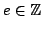
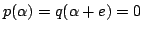

Usage
dispersion p
dispersion(p, q)
integerDistances p
integerDistances(p, q)
Signatures
dispersion: % Integer
dispersion: (%,%) integerDistances: % integerDistances: (%,%)
| Parameter | Type | Description |
|---|---|---|
| p | % | A nonzero polynomial |
| q | % | A nonzero polynomial (optional) |
Returns
integerDistances(p, q) returns all the integers  such that for each suchthere exists
in an algebraic closure of the fraction field of R such that , while dispersion(p, q) returns
if integerDistances(p, q) contains only elements strictly smaller than
, its maximal nonnegative element otherwise.
Remarks
The parameteris optional for both functions, its default value being
.